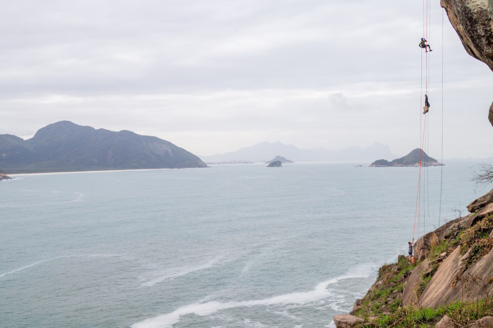
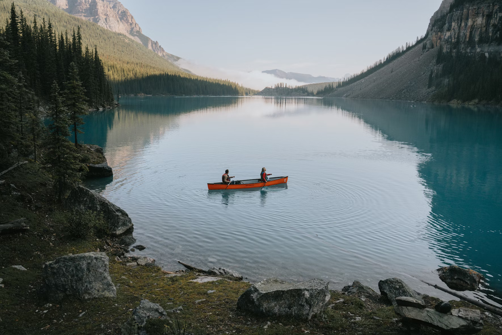

Water-based activities all take place on Lochquarry itself.

Water Based Activities

Kayaking
Have a go at paddling, rolling and rafting in one of our brand new kayaks.Max group size 8. Ages 8+

Canoeing
Work single-handedly or in pairs to canoe the length of Lochquarry. You can even take a picnic with you and explore some of the Loch’s islands. Max group size 8 boats (up to 16 people). Ages 6+

Powerboating
Take control of one of the Centre’s two RIBs out on Lochquarry and try your hand powerboating. Max group size 6. Ages 12+
The Scouts loved every second of it, especially the powerboating’ −’ −
Martin Bainbridge, Scout Leader‘Five stars, it was great’
− Joe, aged 14